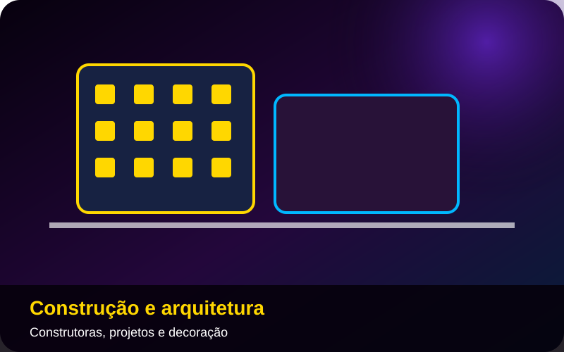
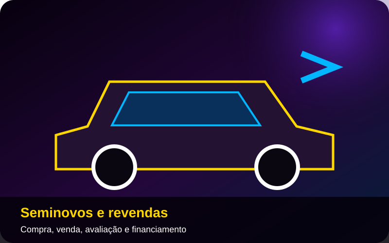
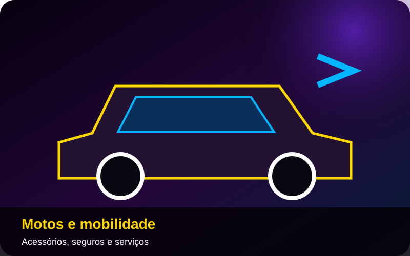
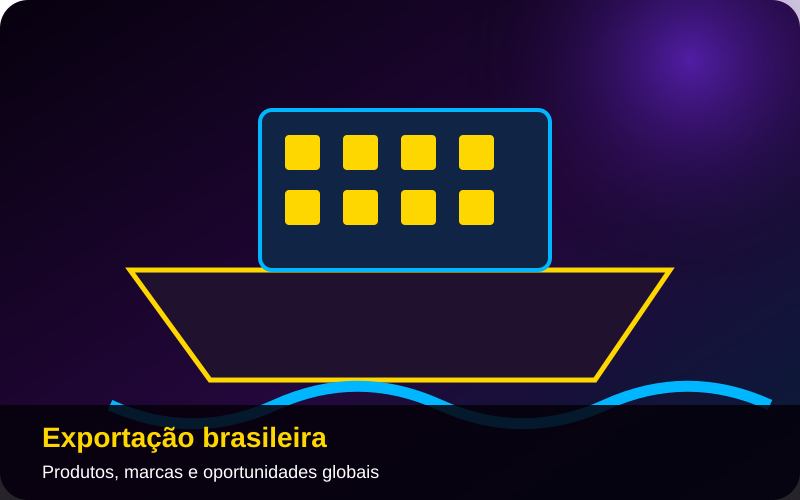
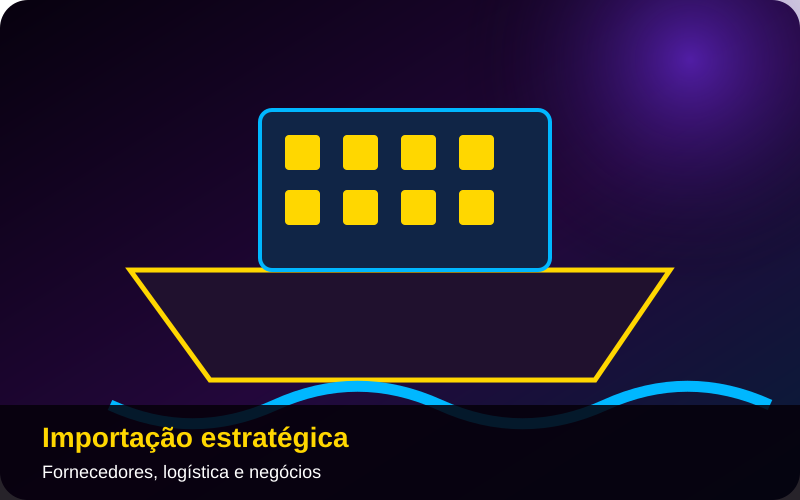
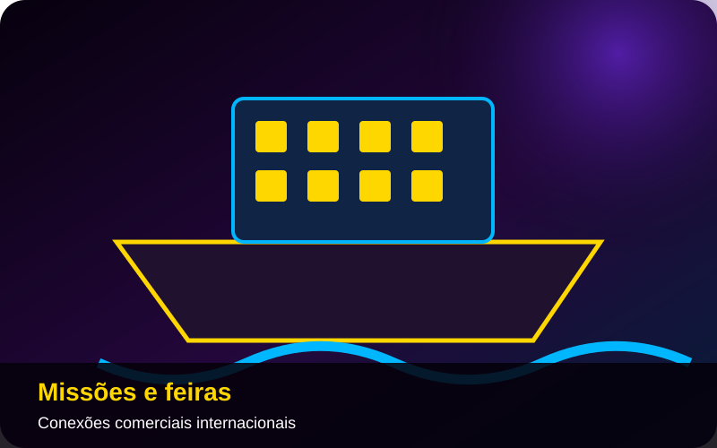
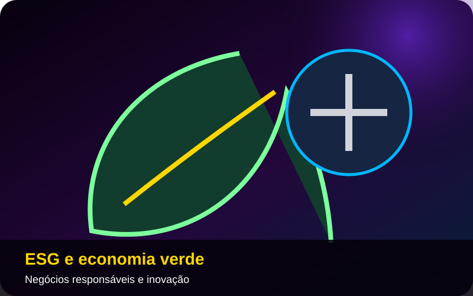
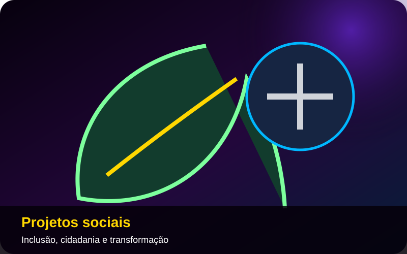
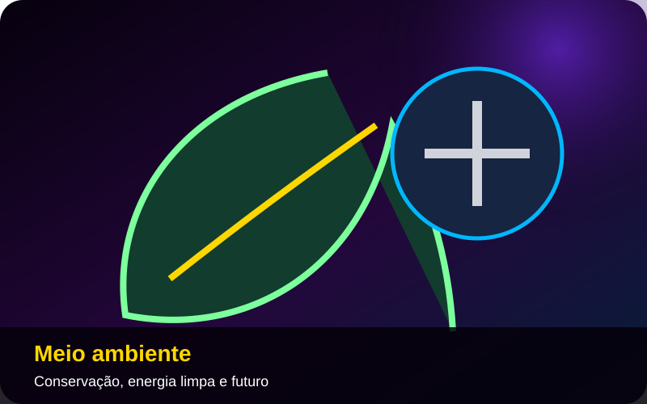

Brasília em movimento
Shows, feiras, festivais, exposições, teatro e grandes encontros na capital.
Estúdio digital com notícias reais, entrevistas, anunciantes e inteligência artificial em uma plataforma nacional de mídia.

Conteúdo real do acervo da TV Voz de Brasília, preparado para fortalecer autoridade e oportunidades comerciais.

Moda festa, coleções e histórias de empreendedorismo feminino.
Ver entrevista e conteúdo →
Entrevista sobre saúde ocular, tecnologia e atendimento especializado.
Ver entrevista e conteúdo →
Metodologia, aprendizagem e formação de crianças e jovens.
Ver entrevista e conteúdo →
Trajetória, projetos e atuação em destaque na TV Voz.
Ver entrevista e conteúdo →Entrevistas selecionadas com lideranças políticas, empresariais e institucionais.

Entrevista sobre política, cidadania e pautas nacionais.
Ver entrevista e conteúdo →Liderança, empreendedorismo e presença nacional.
Ver entrevista e conteúdo →Tecnologia, inovação, imagem e oportunidades para empresas.
Ver entrevista e conteúdo →Parlamentares e lideranças em conversas conduzidas pela TV Voz de Brasília.

Agronegócio, Câmara dos Deputados e desenvolvimento nacional.
Ver entrevista e conteúdo →
Direitos sociais, trabalho, cidadania e futuro do Brasil.
Ver entrevista e conteúdo →Política, gestão pública e desafios nacionais.
Ver entrevista e conteúdo →Entrevistas e agendas diplomáticas produzidas pela TV Voz de Brasília.

Cooperação humanitária, segurança alimentar e atuação internacional.
Ver entrevista e conteúdo →Relações Brasil–Egito, cultura, turismo e cooperação.
Ver entrevista e conteúdo →Diplomacia, integração cultural e relações internacionais.
Ver entrevista e conteúdo →Páginas, entrevistas e campanhas para ampliar presença e credibilidade.
Moda festa e experiências para celebrações especiais.
Ver conteúdo →Tecnologia, soluções de imagem e inovação para empresas.
Ver conteúdo →Móveis, design, ambientes e empreendedorismo.
Ver conteúdo →Shows, feiras, festivais, exposições, teatro e grandes encontros na capital.

Reportagens e bastidores dos principais eventos acompanhados pela TV Voz.
Calendário, matéria, entrevista, vídeo, sorteio de convites e presença nas redes.
Conteúdo para destinos, hotéis, companhias aéreas e negócios do turismo.

Arquitetura, turismo cívico, cultura, gastronomia e eventos.
Ver conteúdo →
Destinos urbanos, negócios, cultura e lazer.
Ver conteúdo →
Rotas, conectividade e experiências de viagem.
Ver conteúdo →Um canal para pesque-pagues, lojas, equipamentos, restaurantes e turismo de pesca.

Entrevista e conteúdo especial ligado ao universo da pesca.
Ver conteúdo →Pesque-pague, lazer, gastronomia e experiências em família.
Ver conteúdo →Peixes, abastecimento, comércio e oportunidades em Brasília.
Ver conteúdo →Entrevistas e coberturas com restaurantes, feiras e ocasiões especiais.

Alta gastronomia, ambiente sofisticado e experiências em Brasília.
Ver conteúdo →Tradição gaúcha, gastronomia, cultura e negócios.
Ver conteúdo →Entrevistas, homenagens e experiências para celebrar essa data.
Ver conteúdo →Conteúdo para instituições de saúde, médicos e especialistas.

Diagnóstico, prevenção e compromisso com a saúde.
Ver conteúdo →Oftalmologia, tecnologia e atendimento especializado.
Ver conteúdo →Entrevista especial sobre saúde ocular e inovação.
Ver conteúdo →Área para Paulo Fayad, imobiliárias, construtoras, lançamentos, salas comerciais, casas, apartamentos e terrenos.

Imóveis residenciais e comerciais em Brasília e no Brasil.
Compra, venda, aluguel, avaliação e consultoria especializada.

Construtoras, incorporadoras, decoração, engenharia e projetos.
Espaço comercial para marcas, lançamentos, financiamento, manutenção, seguradoras e soluções de mobilidade.

Concessionárias, lançamentos, test-drives e campanhas.

Avaliação, compra, venda, financiamento e consórcio.

Acessórios, oficinas, proteção veicular e mobilidade.
Conteúdo para empresas que desejam comprar, vender, representar marcas e criar conexões internacionais.

Estratégia, preparação, promoção comercial e acesso a mercados.

Fornecedores, logística, documentação e oportunidades de negócio.

Delegações, rodadas de negócios, embaixadas e eventos globais.
Espaço para empresas sustentáveis, ações sociais, economia verde e campanhas do Instituto Brazil Just.

Boas práticas, inovação responsável, energia limpa e governança.

Inclusão, esporte, saúde, educação e transformação de comunidades.

Conservação, consumo consciente e soluções para um planeta melhor.
Imagens e pautas reais sobre mobilidade, serviços, comércio, cultura e comunidade.
Política local, turismo, serviços e agenda cultural.
Ver conteúdo →Comércio, mobilidade, empreendedorismo e histórias locais.
Ver conteúdo →Comunidade, esporte, cultura, serviços e desenvolvimento.
Ver conteúdo →Marcas, selos e projetos que sustentam a autoridade institucional da plataforma.
40 anos TV VozCredibilidade histórica da TV Voz de Brasília.
 Anuário Brasileiro
Anuário BrasileiroAnual, português/inglês, impresso e distribuído em Brasília, no Brasil e no exterior pelo Itamaraty.
Projetos sociais, cidadania, inclusão e impacto humano.
Personalidade do Ano e reconhecimento institucional.
Vestidos de noivas, debutantes, festas e formaturas em uma página especial.
Conhecer a página →Página para veículos, motos, lançamentos e revendas.
Ver modelo →Página para imóveis, lançamentos, avaliação e construção.
Ver modelo →Preencha o formulário. Ao enviar, sua proposta será aberta diretamente no WhatsApp comercial.
Escolha a área de interesse e conte o que deseja divulgar. A equipe receberá os dados organizados pelo WhatsApp.
WhatsApp comercial: (61) 99981-1109
Conheça o trabalho do IBJ, suas campanhas, projetos de inclusão, esporte, saúde e cidadania.